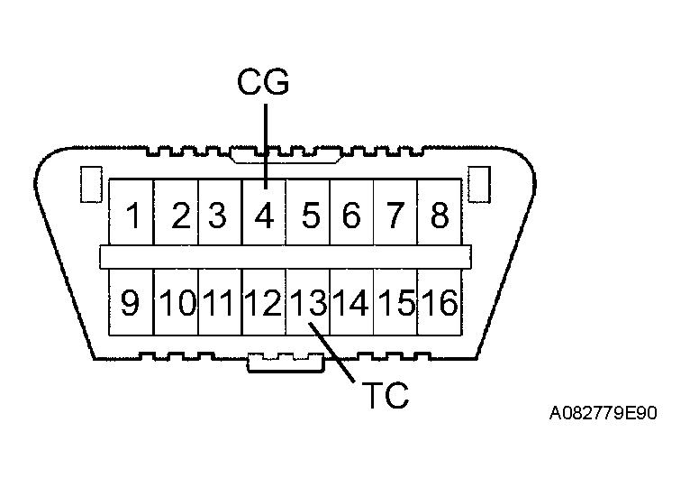

Operation Check
- CHECK SENSOR SIGNAL BY TEST MODE (When Using Intelligent Tester) NOTE: After replacing the yaw rate sensor and/or skid control ECU with actuator, perform zero point calibration of the yaw rate sensor (see CALIBRATION ).
HINT:
If the ignition switch is turned from ON to ACC or OFF during test mode, the DTCs will be erased.
- Procedures for test mode:
- Turn the ignition switch OFF.
- Check that the shift lever is on P.
- Connect the intelligent tester (with CAN VIM) to the DLC3.
- Turn the ignition switch ON.
- Select the Test Mode using the intelligent tester.
HINT:
Refer to the intelligent tester operator's manual for further details.
- Check that the ABS warning light and VSC warning light blink.
HINT:
If the ABS warning light and VSC warning light do not blink, check the ABS warning light and VSC warning light circuits.
TROUBLE AREA INDEX REFERENCETrouble area ABS WARNING LIGHT CIRCUIT VSC WARNING LIGHT CIRCUIT
- Check the master cylinder pressure sensor.
- Leaving the vehicle in a stationary condition and the brake pedal in a free condition for 1 second or more, depress the brake pedal with a force 98 N (10 kgf, 22 lbf) or more, and maintain it for 1 second or more.
HINT:
At this time, the ABS warning light and VSC warning light illuminate for 3 seconds.
- Leaving the vehicle in a stationary condition and the brake pedal in a free condition for 1 second or more, depress the brake pedal with a force 98 N (10 kgf, 22 lbf) or more, and maintain it for 1 second or more.
- Check the speed sensor.
- Drive the vehicle straight forward at the following speeds. Then check that the ABS warning light is as follows.ABS WARNING LIGHT REFERENCE
Vehicle Speed Check ABS Warning Light 45 km/h (28 mph) or higher Deviations of sensor signal Turns off HINT:
The sensor signal check may not be completed if the vehicle's wheels slip or the steering wheel is turned during this check.
- Stop the vehicle.
- Drive the vehicle straight forward at the following speeds. Then check that the ABS warning light is as follows.
- Check the yaw rate sensor.
- Move the shift lever to the D position and drive the vehicle at 5 km/h (3 mph). Turn the steering wheel either to the left or right 90°or more, and drive the vehicle in a half-circle pattern.
- Stop the vehicle and move the shift lever to the P position. Check that the skid control buzzer sounds for 3 seconds.
If the skid control buzzer sounds, the sensor check is completed normally.
If the skid control buzzer does not sound, check the skid control buzzer circuit (see SKID CONTROL BUZZER CIRCUIT ), and then perform the sensor check again.
If the skid control buzzer still does not sound, there is a malfunction in the VSC sensor. Check the DTC.
HINT:
- Drive the vehicle in a half-circle. At the end of the turn, the direction of the vehicle should be within 180 +-5° of its start position.
- Do not spin the wheels.
- Read the DTC by following the tester screen.
HINT:
Refer to the intelligent tester operator's manual for further details.
- Procedures for test mode:
- CHECK SENSOR SIGNAL BY TEST MODE (When not Using Intelligent Tester) NOTE: After replacing the yaw rate sensor and/or skid control ECU with actuator, perform zero point calibration of the yaw rate sensor (see CALIBRATION ).
HINT:
If the ignition switch is turned from ON to ACC or OFF during test mode, the DTCs will be erased.
- Procedures for test mode:
- Turn the ignition switch OFF.
- Using SST, connect terminals 12 (TS) and 4 (CG) of the DLC3.
SST 09843-18040
- Check that the steering wheel is in the center position and move the shift lever to the P position.
- Turn the ignition switch ON.
- Check that the ABS warning light and VSC warning light blinks as shown in the illustration.
HINT:
If the ABS warning light or VSC warning light does not blink, check the ABS warning light circuit, VSC warning light circuit or TC and CG terminal circuit.
TROUBLE AREA INDEX REFERENCETrouble area ABS WARNING LIGHT CIRCUIT VSC WARNING LIGHT CIRCUIT TS AND CG TERMINAL CIRCUIT
- Check the master cylinder pressure sensor.
- Leaving the vehicle in a stationary condition and the brake pedal in a free condition for 1 second or more, depress the brake pedal with a force 98 N (10 kgf, 22 lbf) or more, and maintain it for 1 second or more.
HINT:
At this time, the ABS warning light illuminates for 3 seconds.
- Leaving the vehicle in a stationary condition and the brake pedal in a free condition for 1 second or more, depress the brake pedal with a force 98 N (10 kgf, 22 lbf) or more, and maintain it for 1 second or more.
- Check the speed sensor.
- Drive the vehicle straight forward at the following speeds. Then check that the ABS warning light is as follows.ABS WARNING LIGHT REFERENCE
Vehicle Speed Check ABS Warning Light 45 km/h (28 mph) or higher Deviations of sensor signal Turns off HINT:
The sensor signal check may not be completed if the vehicle's wheels slip or the steering wheel is turned during this check.
- Stop the vehicle.
- Drive the vehicle straight forward at the following speeds. Then check that the ABS warning light is as follows.
- Read the DTCs.
- Using SST, connect terminals 13 (TC) and 4 (CG) of the DLC3.
SST 09843-18040
- Read the number of blinks of the ABS warning light.
HINT:
- As an example, the blinking patterns for DTCs 72 and 76 are shown below.
- The conditions are explained in the Diagnostic Trouble Code Chart.
- For the normal code, the light cycles between ON and OFF at intervals of 0.25 seconds.
- If more than 1 DTC is detected at the same time, the codes will be displayed in numerical order.

Courtesy of © TOYOTA, LICENSE AGREEMENT TMS1002
- Using SST, connect terminals 13 (TC) and 4 (CG) of the DLC3.
- After the check, disconnect SST from terminals 13 (TC) and 4 (CG) of the DLC3.
- Check the yaw rate sensor.
- Move the shift lever to the D position and drive the vehicle at 5 km/h (3 mph). Turn the steering wheel either to the left or right 90°or move, and drive the vehicle in a half-circle pattern.
- Stop the vehicle and move the shift lever to the P position. Check that the skid control buzzer sounds for 3 seconds.
If the skid control buzzer sounds, the sensor check is completed normally.
If the skid control buzzer does not sound, check the SKID CONTROL BUZZER CIRCUIT , and then perform the sensor check again.
If the skid control buzzer still does not sound, there is a malfunction in the VSC sensor. Check the DTC.
HINT:
- Drive the vehicle in a half-circle. At the end of the turn, the direction of the vehicle should be within 180 +-5° of its start position.
- Do not spin the wheels.
- Using SST, connect terminals 13 (TC) and 4 (CG) of the DLC3.
SST 09843-18040
- Read the number of blinks of the VSC warning light.
HINT:
- As an example, the blinking patterns for DTCs 71 and 72 are shown below.
- The conditions are explained in the Diagnostic Trouble Code Chart.
- For the normal code, the light cycles between ON and OFF at intervals of 0.25 seconds.
- If more than 1 DTC is detected at the same time, the codes will be displayed in numerical order.
- After performing the check, disconnect the SST from terminals 13 (TS) and 4 (CG) of the DLC3, and turn the ignition switch OFF.
- Procedures for test mode: